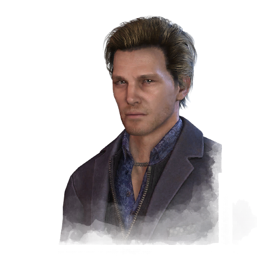

菲利克斯·里希特 Felix Richter
- 性别
- Man
- 出身
- 德国人
- 演员
- Frédéric Poirier (BHVR)
背景故事
菲利克斯·里希特出生于德国科堡，父亲是扬诺什·里希特，母亲是乌尔苏拉·里希特。里希特家族在当地根基深厚，是最受敬重的医生世家之一。他的父母都是某个古老组织的成员，总是在各地出席医学会议，或是奔赴世界各地提供人道主义援助。旅行让年幼的菲利克斯接触到了全新的文化与语言，以及与他以往所见截然不同的建筑。他说不准自己究竟是从何时起对建筑着了迷，但一旦着迷，便是入了骨、入了魔；他知道，尽管家族留给他这样的传承，他终有一天会设计出足以激励世界的建筑。23岁时，他已被视为建筑界的天才，囊括了瑞士建筑师奖章与德国国家设计奖。然而，即便取得了这样的成功，菲利克斯始终无法摆脱那种啃噬着他内心的感觉：他所获得的一切，更多依赖于运气与人脉，而非才华与努力。在成长过程中，菲利克斯不善交际、性情内敛，比起与人相伴，他更愿意独守自己的想象世界。他朋友寥寥，因此每当不与父母一同旅行时，菲利克斯便泡在父亲的藏书室里，如饥似渴地翻阅珍本，研究历史与建筑，吸收一切关于历代建筑流派的知识。他的父亲希望菲利克斯能变得更外向一些，于是请来了各式各样的专家，只为帮他提升社交能力。这些努力宣告失败后，父亲终于认了命，心想儿子总会学到……
专属技能
通用技能 任意逃生者均可使用
寻宝专家
Artefact Hunter
执念之缚
Bound by Obsession
黑暗感知
Dark Sense
坚持到底
Down to the Last
似曾相识
Déjà Vu
希望
Hope
同族
Kindred
最后站立
Last Standing
轻装上阵
Lightweight
不抛弃任何人
No One Left Behind
过度自信
Overconfidence
掠夺者直觉
Plunderer's Instinct
预兆
Premonition
韧性
Resilience
滑溜之躯
Slippery Meat
小猎手
Small Game
背脊发凉
Spine Chill
这不是真的
This Is Not Happening
硬跑者
Tough Runner
我们能行
We'll Make It
求生意志
Will to Live
附加品
- 暂无数据。